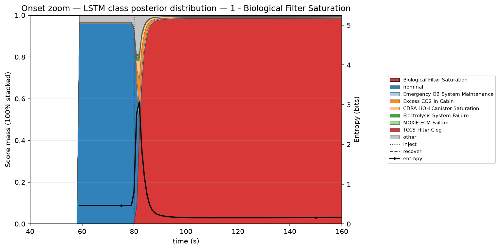
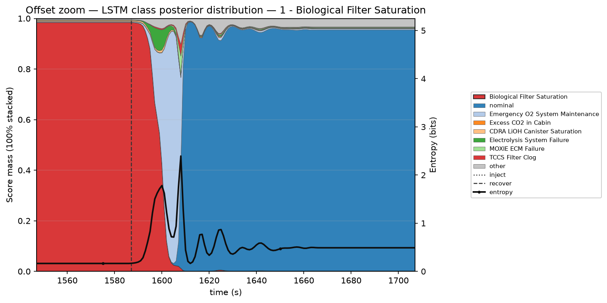

Scenario 01 · onset · inject @ 80 s — nominal mass drops; truth class and entropy spike, then settle

Same run · offset · recover @ 1587 s — truth mass collapses; brief entropy rise; return to nominal